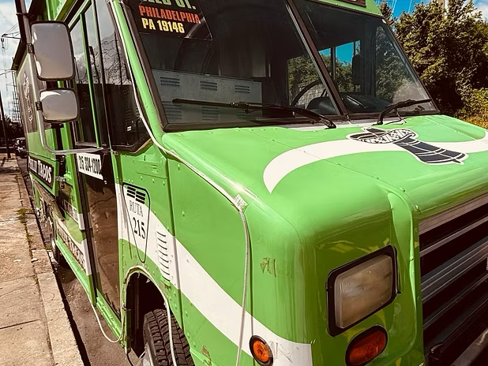
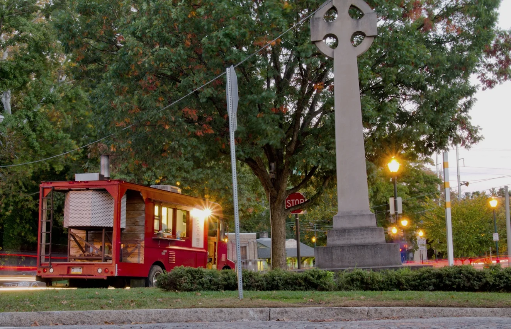
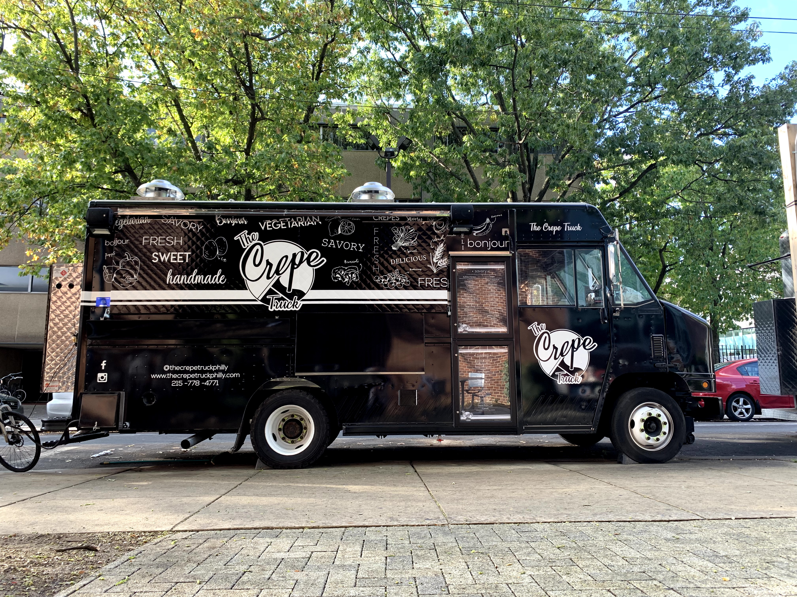

This is a simple table showcasing my three favorite food trucks in Philadelphia.
| Food Truck Name | Truck Location | Truck Photo | Food Type | Why I Like It |
|---|---|---|---|---|
| Philly Tacos | S. 25th Street & Washington Avenue, South Philadelphia |  |
Mexican food, including tacos | I like the fresh flavors, and tacos are easy to enjoy as a quick meal. |
| Pitruco Pizza | Changes by day; for example, the truck lists Fairmount at 22nd & Brown on Tuesdays. |  |
Made-to-order, wood-fired pizza | I like the crispy crust and the variety of toppings available. |
| The Crepe Truck Philly | 1291 W. Norris Street, Philadelphia |  |
Sweet and savory crepes | I like the versatility of crepes, and they make for a delicious dessert. |